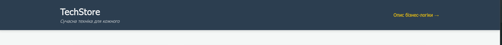
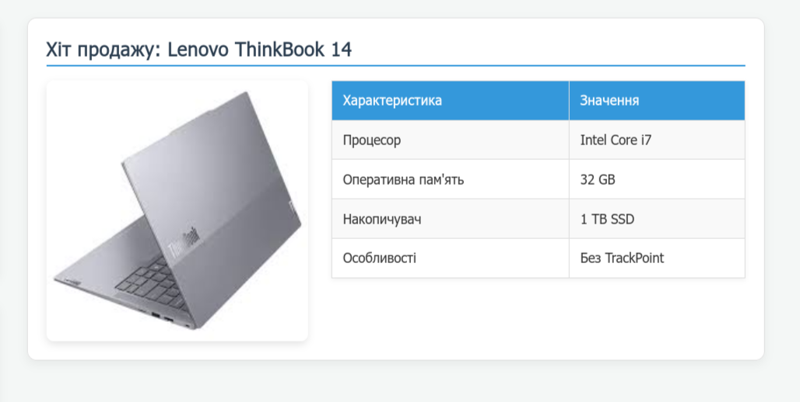
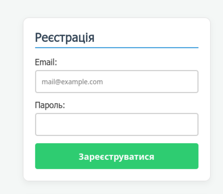
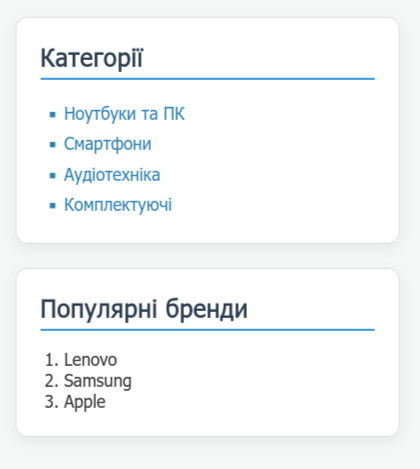
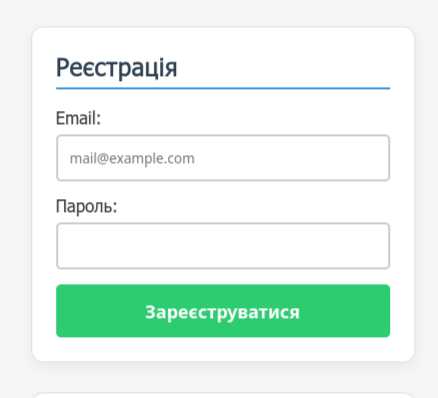

Звіт з Лабораторної роботи №2
Тема, мета ЛР №2. Місце розташування сайту, звіту
Тема: КАСКАДНІ ТАБЛИЦІ СТИЛІВ. СЕЛЕКТОРИ ТЕГУ, КЛАСУ, ІДЕНТИФІКАТОРА. СТИЛЬОВЕ ОФОРМЛЕННЯ ТЕКСТОВИХ ЕЛЕМЕНТІВ В HTML-ДОКУМЕНТАХ.
Мета: Придбати практичні навички роботи з селекторами, ідентифікаторами, списками, різноманітними властивостями кольору і фону, зовнішніми та внутрішніми відступами, оформленням текстових елементів та каскадними таблицями стилів.
Способи підключення стилів
У WEB-застосунку застосовано внутрішню таблицю стилів (тег <style> у секції <head>), а також вбудовані (inline) стилі через атрибут style="...".
<!-- Приклад внутрішньої таблиці стилів -->
<head>
<style>
body { font-family: 'Segoe UI', sans-serif; background-color: #f4f7f6; }
</style>
</head>
<!-- Приклад inline-стилю -->
<img src="img/noute.jpg" style="border-radius: 8px; box-shadow: 0 4px 8px rgba(0,0,0,0.1);">Селектори тегу
Селектори тегів застосовано для задання базового оформлення структурних елементів HTML (body, header, main, footer, h1, p):
body {
font-family: 'Segoe UI', Tahoma, Geneva, Verdana, sans-serif;
background-color: #f4f7f6;
color: #333;
display: flex;
flex-direction: column;
min-height: 100vh;
}
header, footer { background-color: #2c3e50; color: white; text-align: center; }Скріншот результату у браузері:

Селектори класу
Селектори класів використано для стилізації таблиць характеристик (.tech-table) та списку категорій (.category-list):
.category-list {
list-style-type: square;
background: #fff;
padding: 15px 35px;
border-radius: 8px;
}
.tech-table { width: 100%; border-collapse: collapse; background: #fff; }
.tech-table th { background-color: #3498db; color: white; }Скріншот результату у браузері:

Селектори ідентифікаторів
Селектор ідентифікатора #register-form застосовано для оформлення картки форми реєстрації користувача:
#register-form {
background: #fff;
padding: 25px;
border-radius: 8px;
box-shadow: 0 4px 10px rgba(0,0,0,0.1);
max-width: 400px;
border: 1px solid #e0e0e0;
}Скріншот результату у браузері:

Інші селектори
У проєкті також використано універсальний селектор, сусідні та дочірні селектори, а також селектори атрибутів:
/* Універсальний селектор (скидання відступів) */
* { margin: 0; padding: 0; box-sizing: border-box; }
/* Сусідній селектор (абзац одразу після h1) */
header h1 + p { font-style: italic; color: #bdc3c7; }
/* Дочірній селектор (прямий нащадок h2 всередині main) */
main > h2 { color: #2c3e50; border-bottom: 2px solid #3498db; }
/* Селектор атрибута (поля введення конкретного типу) */
input[type="email"], input[type="password"] {
width: 100%; padding: 12px; border: 2px solid #ccc; border-radius: 4px;
}Скріншот результату у браузері:

CSS: Шрифти, Текст, Таблиці, Фон, Контур, Списки, CSS Просунутий
У розробці застосовано комплексну стилізацію текстових елементів та блоків:
- Шрифти та текст:
font-family,font-style,font-weight,color. - Фон та контури:
background-color,border-radius,box-shadow,border. - Списки та таблиці:
list-style-type: square,border-collapse,padding. - CSS Просунутий (Псевдокласи та анімації):
:hover(зміна кольору кнопок і рядків таблиці при наведенні),:focus(підсвічування полів вводу),:nth-child(even)(зебра-стиль для таблиці),transition(плавна зміна станів).
/* Приклад просунутого CSS */
button[type="submit"]:hover { background-color: #27ae60; }
input[type="email"]:focus { border-color: #3498db; }
.tech-table tr:nth-child(even) { background-color: #f9f9f9; }
.tech-table tr:hover { background-color: #e8f4f8; transition: background 0.2s; }Скріншот стилізованої сторінки з ефектами:

Висновки до ЛР №2
Під час виконання лабораторної роботи №2 було набуто практичних навичок роботи з каскадними таблицями стилів (CSS). Було опановано використання різних типів селекторів (тегів, класів, ідентифікаторів, дочірніх, сусідніх та селекторів атрибутів), а також налаштовано гармонійне стильове оформлення шрифтів, блоків, таблиць, списків та форм з використанням сучасних ефектів псевдокласів (:hover, :focus, :nth-child) та плавних transitions.